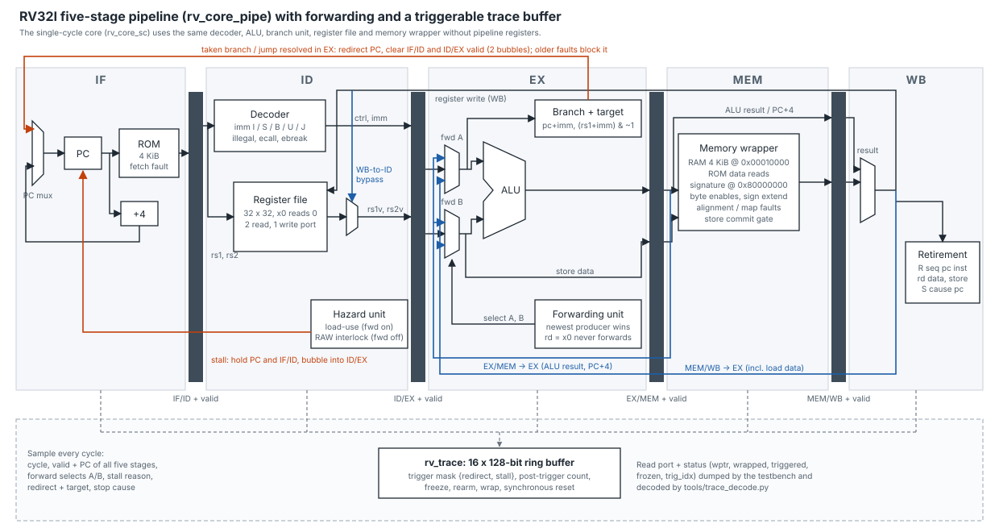
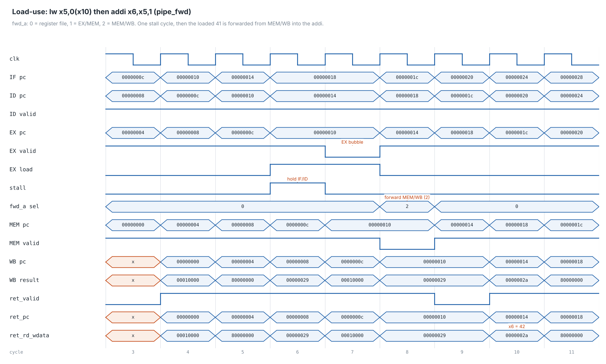
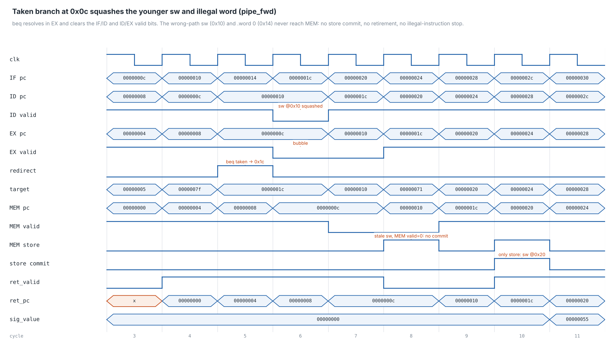

RV32I Processor
A single-cycle core and a five-stage pipeline share a SystemVerilog instruction decoder, memory system, and retirement interface. A 16-entry trace buffer freezes after a configurable number of cycles following a stall or redirect.

Simulation results
- Programs
- 48
- Simulation runs
- 149
- Compared events
- 38,109
- C workload cycle reduction
- 26.6%
The same compiled C program took 12,442 cycles without forwarding and 9,130 with it. Both modes retired 7,301 instructions with matching architectural results. The regression compared all three core configurations to a separate Python ISA model.
Load-to-use stall

Wrong-path store
